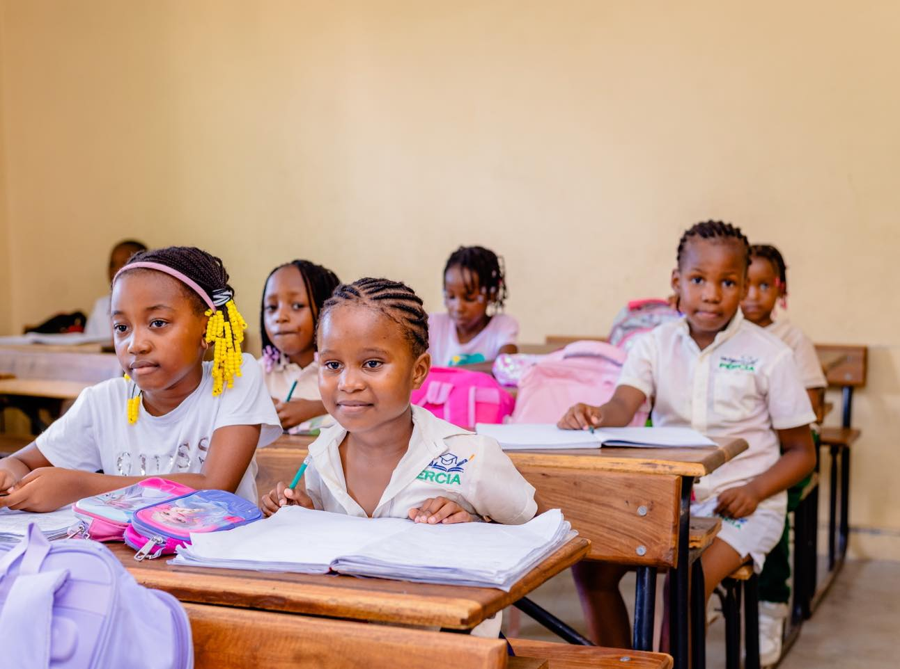
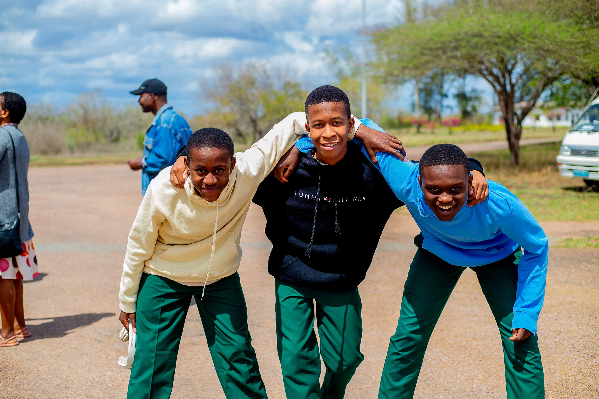
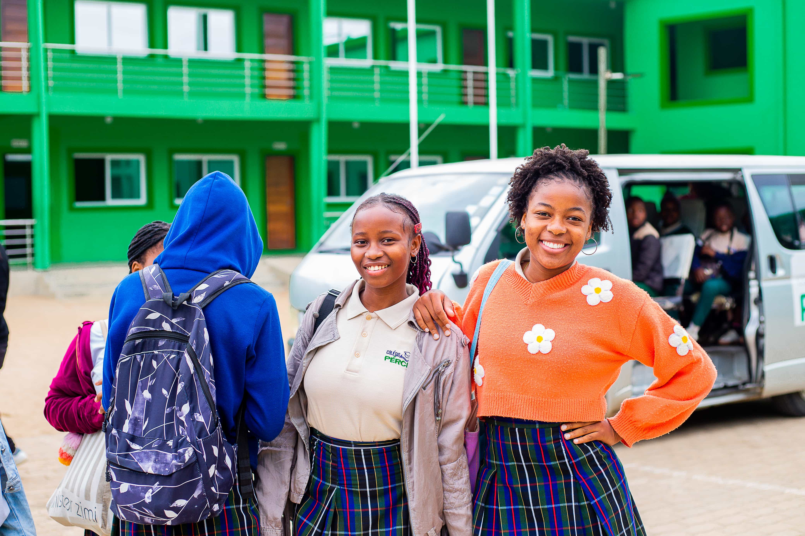

Programas de Ensino do Colégio Pércia
O Colégio Pércia oferece ensino completo da 1.ª à 12.ª classe, seguindo o currículo nacional moçambicano. A oferta está organizada em três ciclos principais, complementados por actividades extracurriculares e apoio pedagógico.
Ensino Primário
O ensino primário no Colégio Pércia abrange da 1.ª à 6.ª classe. O foco está no desenvolvimento das competências básicas de leitura, escrita, matemática e raciocínio, com metodologias participativas adaptadas a cada fase de desenvolvimento.
Disciplinas incluídas
- Português
- Matemática
- Inglês
- Francês
- Informática
- Educação Física
- Habilidades para Vida
- + Ciências Sociais e Naturais a partir da 4.ª classe


Ensino Secundário
O 1.º ciclo do ensino secundário abrange da 7.ª à 9.ª classe. Nesta fase, os alunos aprofundam os conhecimentos adquiridos no primário e desenvolvem competências de análise, pensamento crítico e autonomia no estudo.
Disciplinas incluídas
- Português
- Matemática
- Inglês
- Francês
- Biologia
- Química
- Física
- História
- Geografia
- Informática
- Educação Física
Ensino Pré-Universitário
O 2.º ciclo do ensino secundário abrange da 10.ª à 12.ª classe e prepara os alunos para o ensino superior. O programa inclui orientação por áreas de conhecimento, preparação para exames nacionais e acompanhamento vocacional.
Áreas disponíveis na 11.ª e 12.ª classe
- Área A — Comunicação e Ciências Sociais
- Área B — Matemática e Ciências Naturais
- Área C — Artes Visuais e Ciências

Reforço Escolar
O Colégio Pércia disponibiliza aulas de reforço escolar com acompanhamento personalizado, para alunos que necessitem de apoio adicional nas diferentes disciplinas. O reforço é orientado por professores qualificados e adaptado às necessidades específicas de cada aluno.
Actividades Extracurriculares
Formação complementar à actividade académica
Taekwondo
Disciplina profissionalizante que desenvolve disciplina, concentração e saúde física.
Artes Plásticas
Disciplina profissionalizante que estimula a criatividade e a expressão artística.
Natação
NovaActividade aquática que promove saúde, confiança e segurança na água.
Pretende inscrever o seu filho?
Consulte as informações de matrícula e a documentação necessária para o processo de inscrição.